High-Performance Violin Plot Analysis with jjbetweenstats
ClinicoPath Development Team
2025-07-13
Source:vignettes/jjstatsplot-24-jjbetweenstats-comprehensive.Rmd
jjstatsplot-24-jjbetweenstats-comprehensive.RmdIntroduction to jjbetweenstats
The jjbetweenstats function is a high-performance
wrapper around the ggstatsplot package, optimized for
creating publication-ready violin plots that compare continuous
variables between independent groups. This function has been
significantly enhanced with performance optimizations, caching
mechanisms, and improved user feedback.
Key Features
- High Performance: Optimized data processing with intelligent caching
- Comprehensive Statistical Testing: Parametric, non-parametric, robust, and Bayesian methods
- Multiple Variable Support: Efficient handling of multiple dependent variables
- Grouped Analysis: Advanced grouping capabilities with grvar parameter
- Customizable Visualizations: Flexible violin, box, and point plot combinations
- Professional Output: Publication-ready plots with statistical annotations
- Real-time Progress: Checkpoint functionality for user feedback during analysis
When to Use jjbetweenstats
Use jjbetweenstats when you need to:
- Compare continuous variables between independent groups
- Analyze treatment effects in clinical trials
- Examine biomarker expression across conditions
- Perform pharmacokinetic comparisons
- Evaluate psychological intervention outcomes
- Create publication-ready statistical visualizations
Basic Usage
Single Dependent Variable Analysis
Let’s start with a basic example using clinical laboratory data:
# Basic violin plot comparing hemoglobin levels across treatment groups
jjbetweenstats(
data = clinical_lab_data,
dep = hemoglobin,
group = treatment_group,
grvar = NULL
)
#>
#> VIOLIN PLOTS TO COMPARE BETWEEN GROUPS
#>
#> Violin plot analysis comparing hemoglobin by treatment_group.
This creates a violin plot showing the distribution of hemoglobin levels across different treatment groups, complete with appropriate statistical testing and effect size calculations.
Multiple Dependent Variables
The optimized function efficiently handles multiple dependent variables:
# Analyze multiple lab parameters simultaneously
jjbetweenstats(
data = clinical_lab_data,
dep = c(hemoglobin, white_blood_cells, platelet_count),
group = treatment_group,
grvar = NULL
)
#>
#> VIOLIN PLOTS TO COMPARE BETWEEN GROUPS
#>
#> Violin plot analysis comparing hemoglobin, white_blood_cells,
#> platelet_count by treatment_group.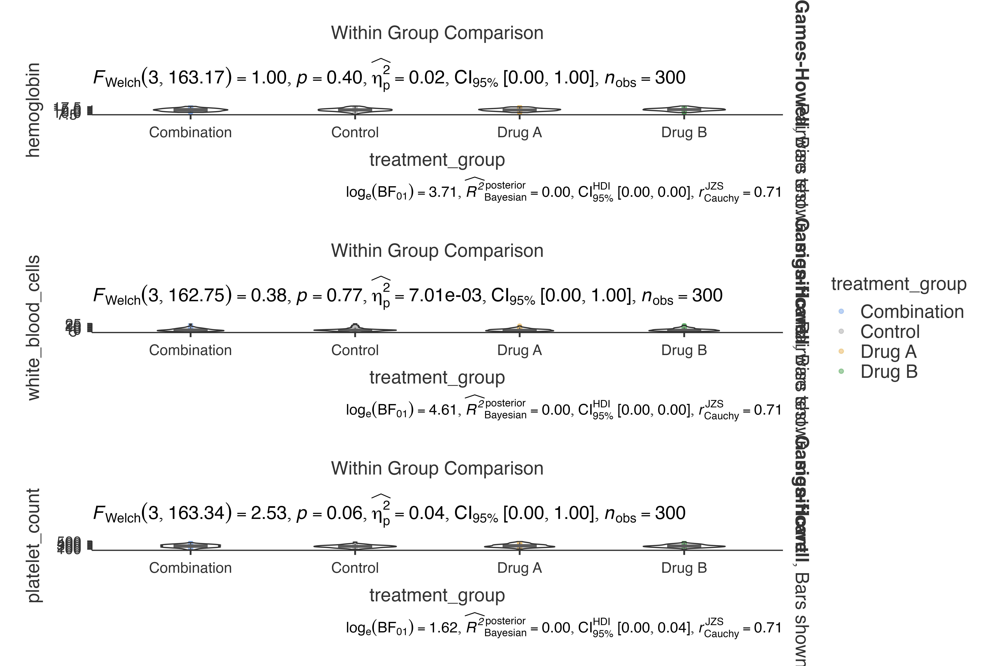
Advanced Statistical Options
Statistical Methods Comparison
The function supports four different statistical approaches:
Parametric Analysis (Default)
jjbetweenstats(
data = biomarker_expression_data,
dep = protein_a_expression,
group = tissue_type,
typestatistics = "parametric"
)
#>
#> VIOLIN PLOTS TO COMPARE BETWEEN GROUPS
#>
#> Violin plot analysis comparing protein_a_expression by tissue_type.
Non-parametric Analysis
jjbetweenstats(
data = pharmacokinetics_data,
dep = peak_concentration,
group = dose_level,
typestatistics = "nonparametric"
)
#>
#> VIOLIN PLOTS TO COMPARE BETWEEN GROUPS
#>
#> Violin plot analysis comparing peak_concentration by dose_level.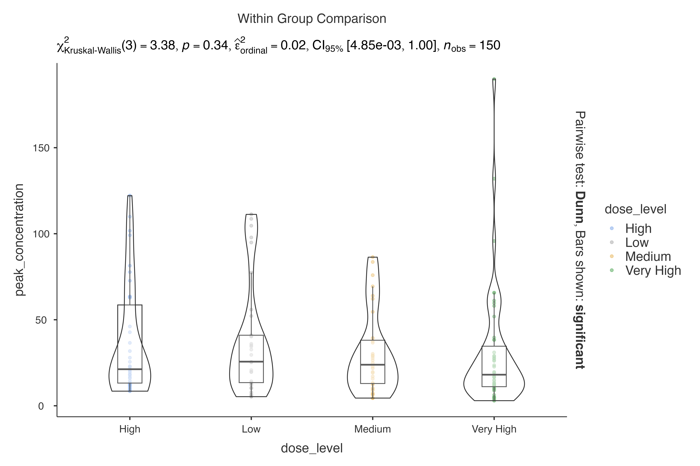
Robust Analysis
jjbetweenstats(
data = psychological_assessment_data,
dep = quality_of_life,
group = intervention_group,
typestatistics = "robust"
)
#>
#> VIOLIN PLOTS TO COMPARE BETWEEN GROUPS
#>
#> Violin plot analysis comparing quality_of_life by intervention_group.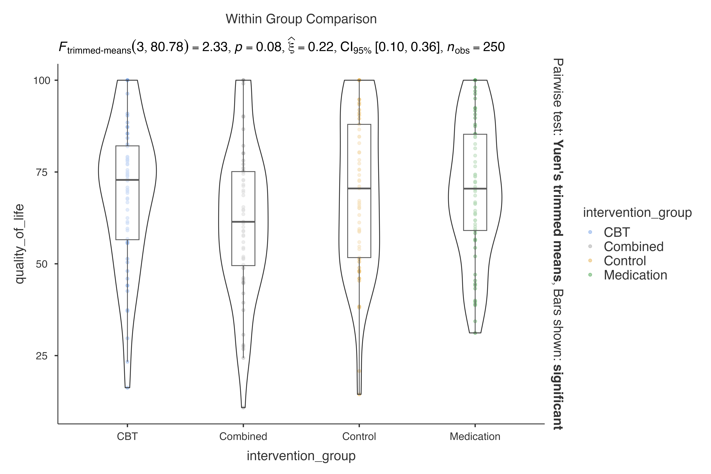
Bayesian Analysis
jjbetweenstats(
data = exercise_physiology_data,
dep = vo2_max,
group = training_regimen,
typestatistics = "bayes"
)
#>
#> VIOLIN PLOTS TO COMPARE BETWEEN GROUPS
#>
#> Violin plot analysis comparing vo2_max by training_regimen.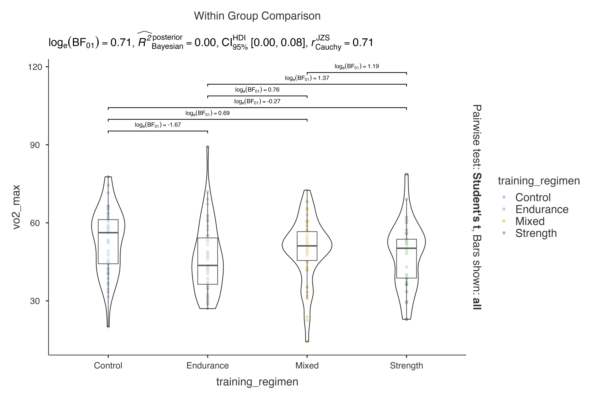
Grouped Analysis with Performance Benefits
Using the grvar Parameter
The optimized grvar parameter allows for sophisticated
grouped analyses:
# Analyze hemoglobin by treatment group, split by disease severity
jjbetweenstats(
data = clinical_lab_data,
dep = hemoglobin,
group = treatment_group,
grvar = disease_severity
)
#>
#> VIOLIN PLOTS TO COMPARE BETWEEN GROUPS
#>
#> Violin plot analysis comparing hemoglobin by treatment_group, grouped
#> by disease_severity.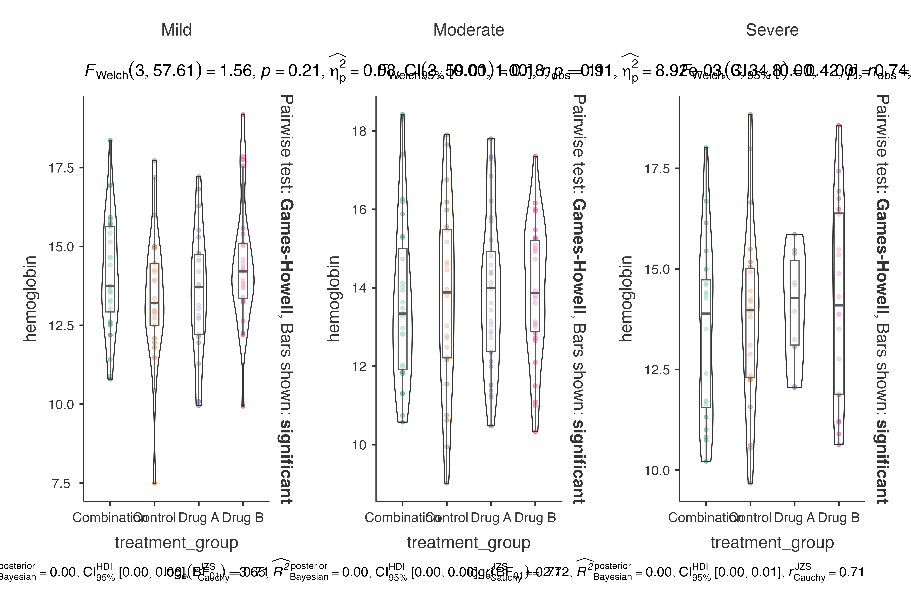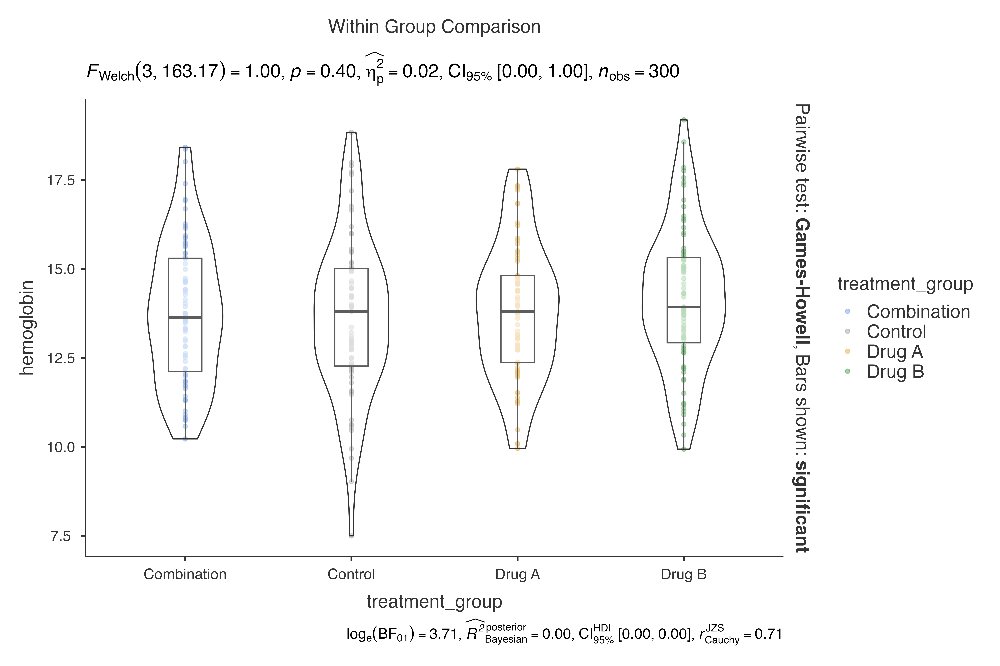
Complex Multi-level Grouping
# Biomarker expression by tissue type, grouped by tumor grade
jjbetweenstats(
data = biomarker_expression_data,
dep = protein_a_expression,
group = tissue_type,
grvar = tumor_grade
)
#>
#> VIOLIN PLOTS TO COMPARE BETWEEN GROUPS
#>
#> Violin plot analysis comparing protein_a_expression by tissue_type,
#> grouped by tumor_grade.

Pairwise Comparisons and Effect Sizes
Enabling Pairwise Comparisons
When comparing multiple groups, pairwise comparisons provide detailed insights:
jjbetweenstats(
data = pharmacokinetics_data,
dep = peak_concentration,
group = dose_level,
pairwisecomparisons = TRUE,
padjustmethod = "holm"
)
#>
#> VIOLIN PLOTS TO COMPARE BETWEEN GROUPS
#>
#> Violin plot analysis comparing peak_concentration by dose_level.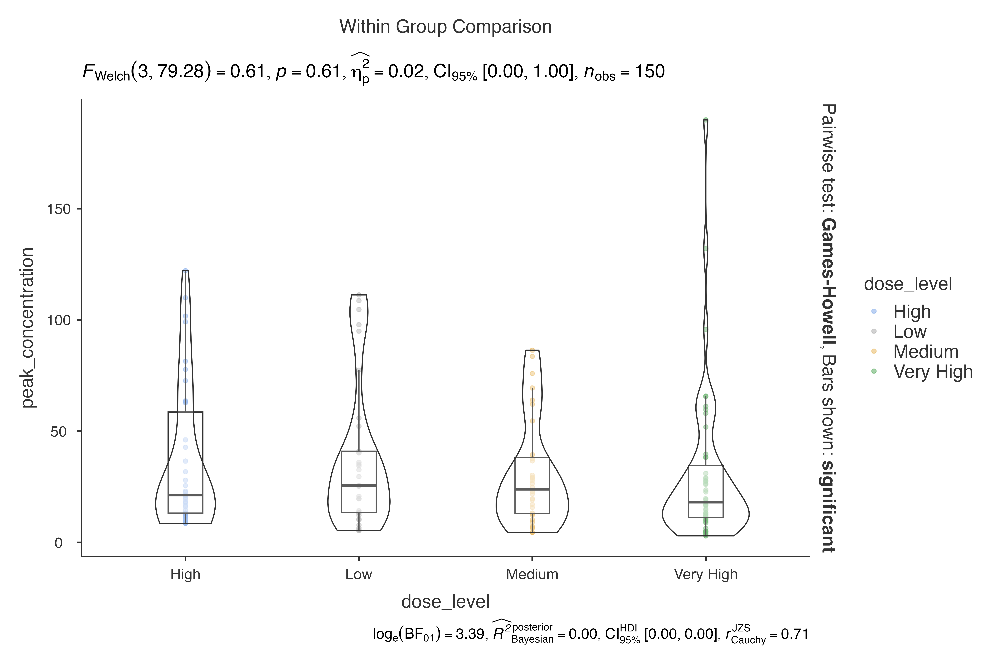
Effect Size Options
Different effect size measures for various research contexts:
# Cohen's d (biased) for clinical trials
jjbetweenstats(
data = clinical_lab_data,
dep = creatinine,
group = treatment_group,
effsizetype = "biased"
)
#>
#> VIOLIN PLOTS TO COMPARE BETWEEN GROUPS
#>
#> Violin plot analysis comparing creatinine by treatment_group.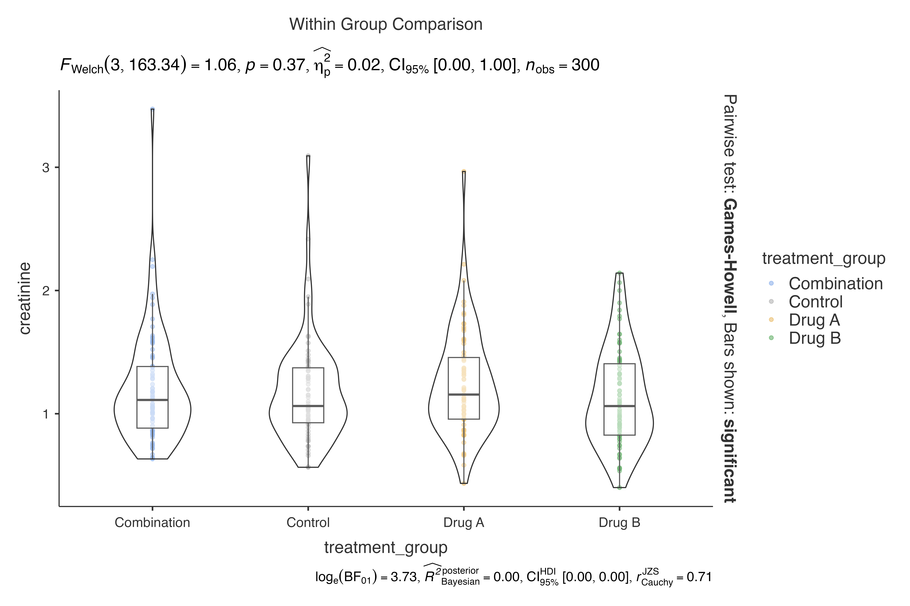
# Hedge's g (unbiased) for smaller samples
jjbetweenstats(
data = psychological_assessment_data,
dep = depression_score,
group = intervention_group,
effsizetype = "unbiased"
)
#>
#> VIOLIN PLOTS TO COMPARE BETWEEN GROUPS
#>
#> Violin plot analysis comparing depression_score by intervention_group.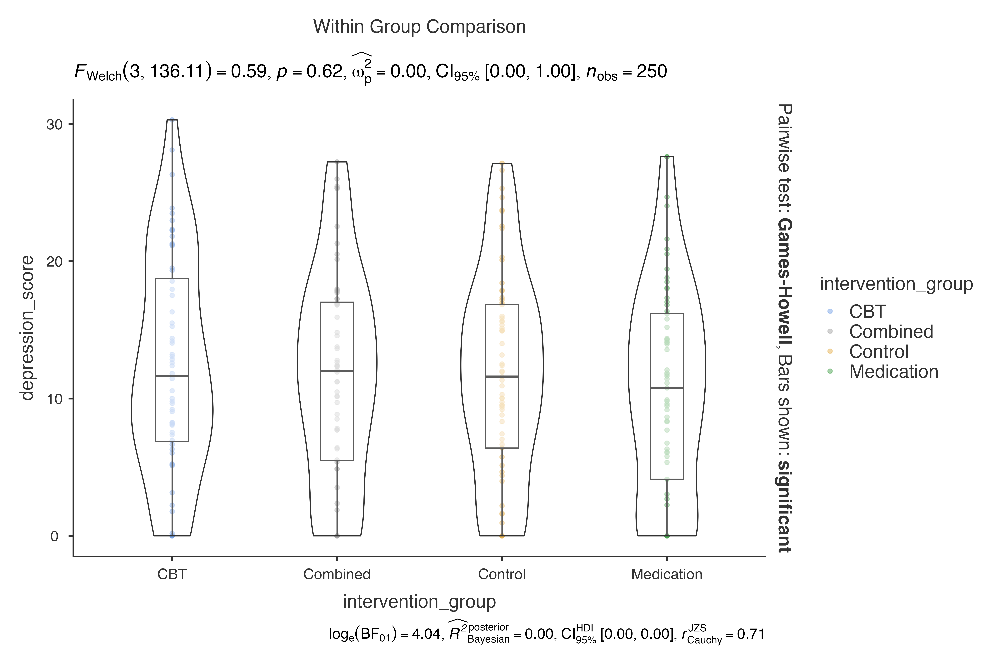
Visualization Customization
Plot Type Combinations
Customize the visualization components:
# Violin plots only
jjbetweenstats(
data = exercise_physiology_data,
dep = muscle_mass,
group = training_regimen,
violin = TRUE,
boxplot = FALSE,
point = FALSE
)
#>
#> VIOLIN PLOTS TO COMPARE BETWEEN GROUPS
#>
#> Violin plot analysis comparing muscle_mass by training_regimen.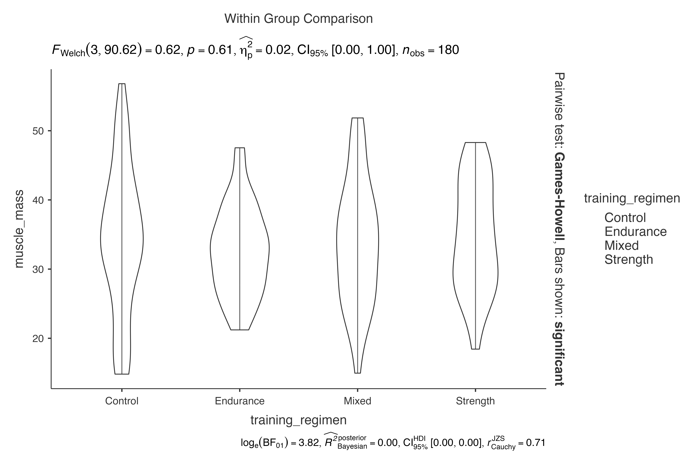
# Box plots only
jjbetweenstats(
data = exercise_physiology_data,
dep = muscle_mass,
group = training_regimen,
violin = FALSE,
boxplot = TRUE,
point = FALSE
)
#>
#> VIOLIN PLOTS TO COMPARE BETWEEN GROUPS
#>
#> Violin plot analysis comparing muscle_mass by training_regimen.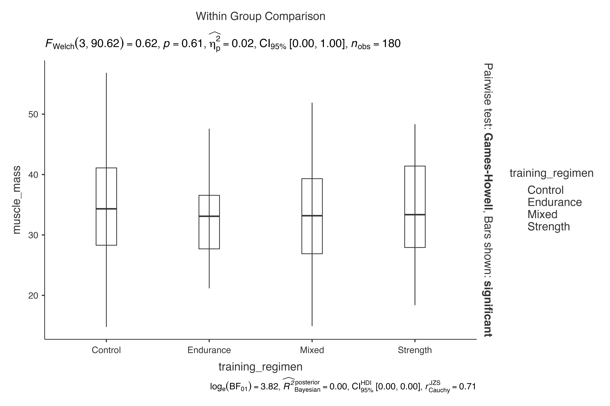
# Combined visualization
jjbetweenstats(
data = exercise_physiology_data,
dep = muscle_mass,
group = training_regimen,
violin = TRUE,
boxplot = TRUE,
point = TRUE
)
#>
#> VIOLIN PLOTS TO COMPARE BETWEEN GROUPS
#>
#> Violin plot analysis comparing muscle_mass by training_regimen.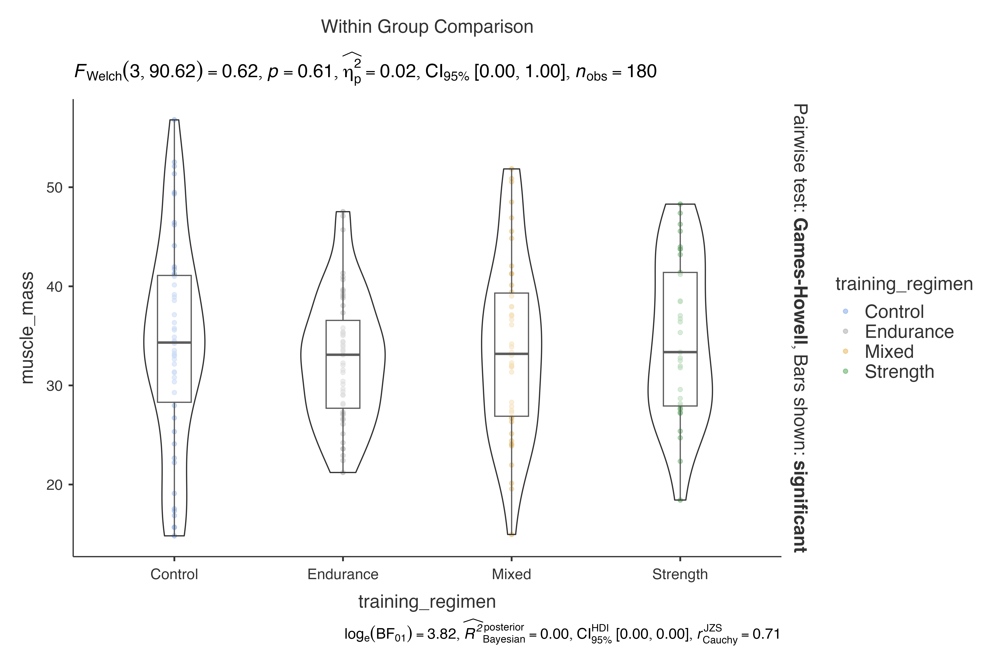
Centrality Measures
Display central tendency measures:
jjbetweenstats(
data = clinical_lab_data,
dep = albumin,
group = treatment_group,
centralityplotting = TRUE,
centralitytype = "parametric" # Shows means
)
#>
#> VIOLIN PLOTS TO COMPARE BETWEEN GROUPS
#>
#> Violin plot analysis comparing albumin by treatment_group.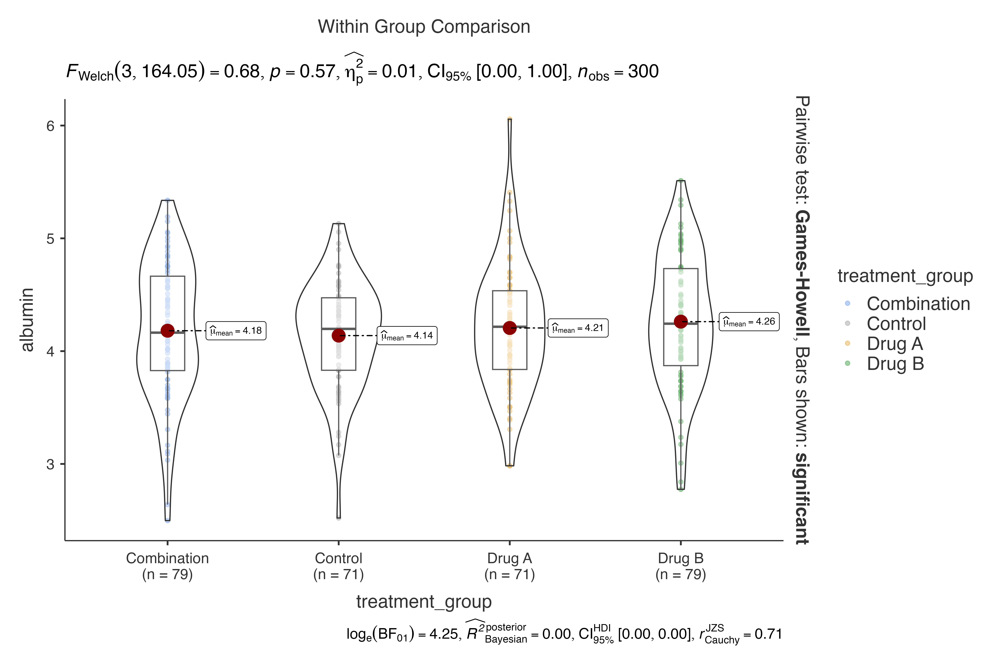
jjbetweenstats(
data = biomarker_expression_data,
dep = gene_expression_score,
group = tissue_type,
centralityplotting = TRUE,
centralitytype = "nonparametric" # Shows medians
)
#>
#> VIOLIN PLOTS TO COMPARE BETWEEN GROUPS
#>
#> Violin plot analysis comparing gene_expression_score by tissue_type.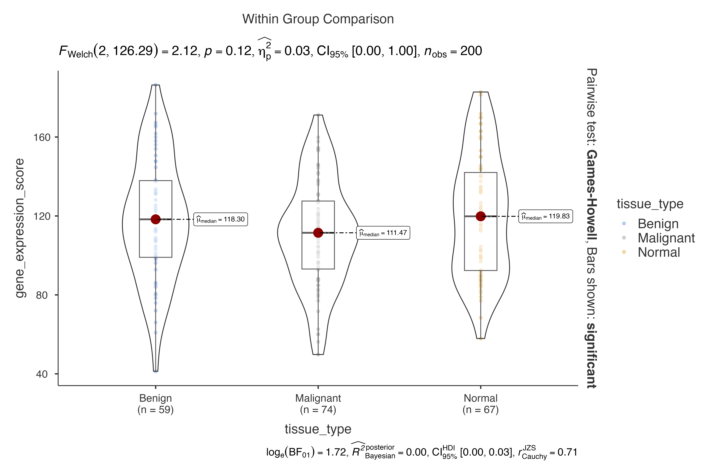
Real-World Clinical Applications
Clinical Trial Analysis
Comprehensive analysis of treatment effectiveness:
# Multi-parameter clinical trial analysis
jjbetweenstats(
data = clinical_lab_data,
dep = c(hemoglobin, white_blood_cells, creatinine),
group = treatment_group,
grvar = disease_severity,
typestatistics = "nonparametric",
pairwisecomparisons = TRUE,
padjustmethod = "BH",
centralityplotting = TRUE
)
#>
#> VIOLIN PLOTS TO COMPARE BETWEEN GROUPS
#>
#> Violin plot analysis comparing hemoglobin, white_blood_cells,
#> creatinine by treatment_group, grouped by disease_severity.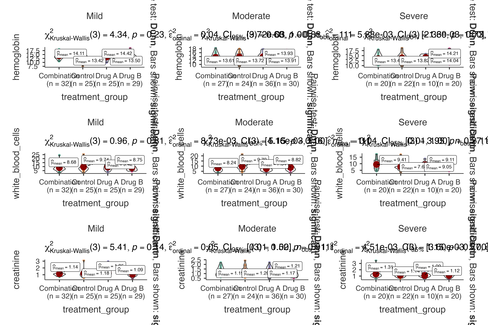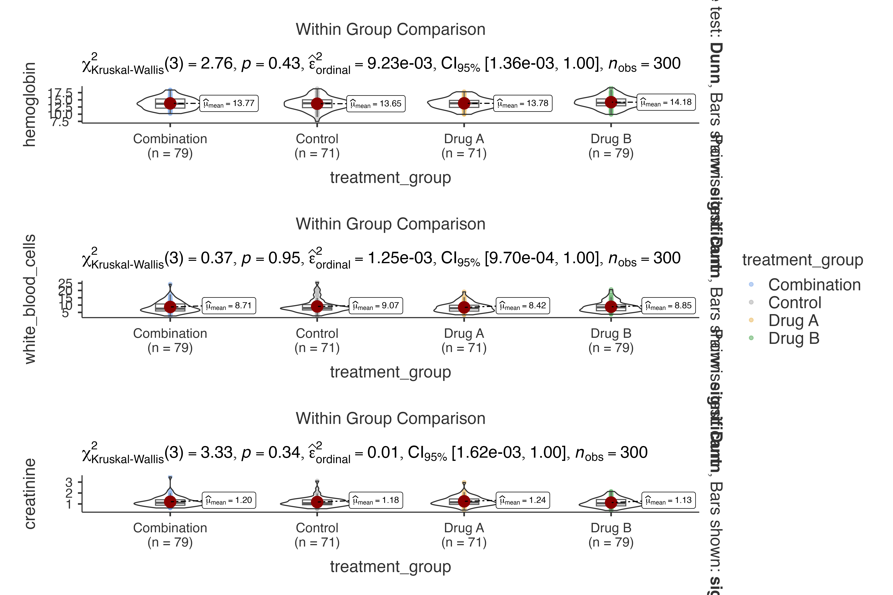
Biomarker Discovery Study
Analyzing biomarker expression patterns:
jjbetweenstats(
data = biomarker_expression_data,
dep = c(protein_a_expression, protein_b_expression, gene_expression_score),
group = tissue_type,
grvar = patient_sex,
typestatistics = "robust",
effsizetype = "omega",
pairwisecomparisons = TRUE
)
#>
#> VIOLIN PLOTS TO COMPARE BETWEEN GROUPS
#>
#> Violin plot analysis comparing protein_a_expression,
#> protein_b_expression, gene_expression_score by tissue_type, grouped by
#> patient_sex.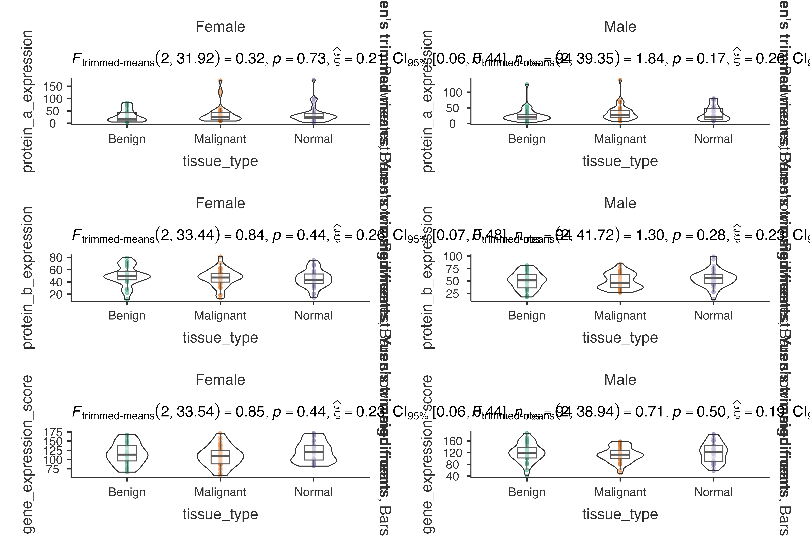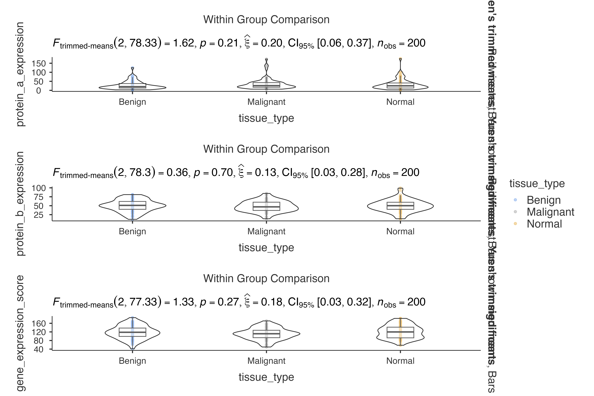
Pharmacokinetic Study
Dose-response relationship analysis:
jjbetweenstats(
data = pharmacokinetics_data,
dep = peak_concentration,
group = dose_level,
grvar = formulation,
typestatistics = "parametric",
pairwisecomparisons = TRUE,
pairwisedisplay = "everything",
centralityplotting = TRUE
)
#>
#> VIOLIN PLOTS TO COMPARE BETWEEN GROUPS
#>
#> Violin plot analysis comparing peak_concentration by dose_level,
#> grouped by formulation.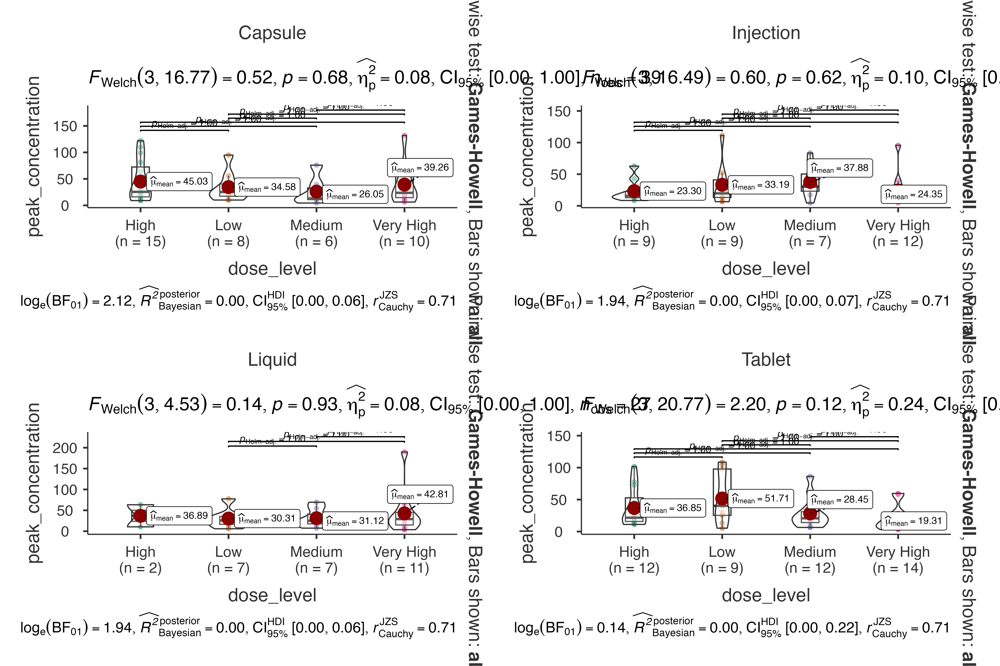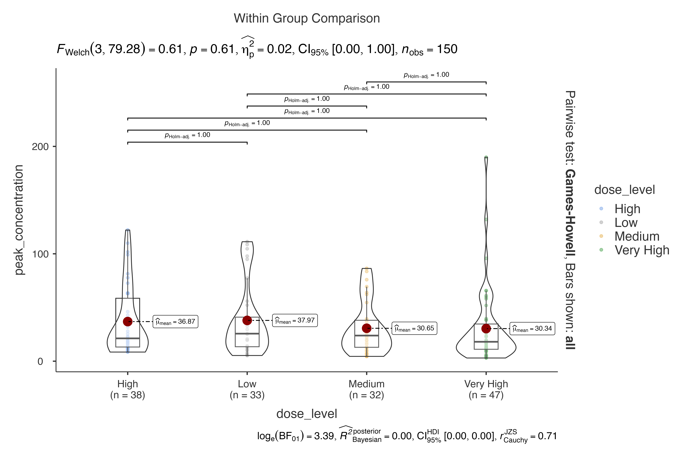
Psychological Intervention Study
Mental health outcome analysis:
jjbetweenstats(
data = psychological_assessment_data,
dep = c(depression_score, anxiety_score, quality_of_life),
group = intervention_group,
grvar = baseline_severity,
typestatistics = "robust",
pairwisecomparisons = TRUE,
padjustmethod = "BH"
)
#>
#> VIOLIN PLOTS TO COMPARE BETWEEN GROUPS
#>
#> Violin plot analysis comparing depression_score, anxiety_score,
#> quality_of_life by intervention_group, grouped by baseline_severity.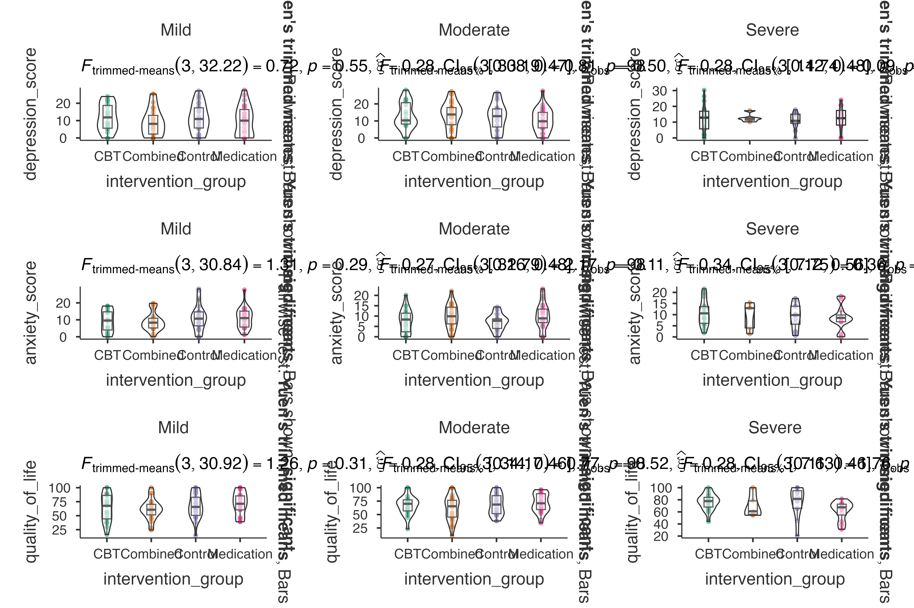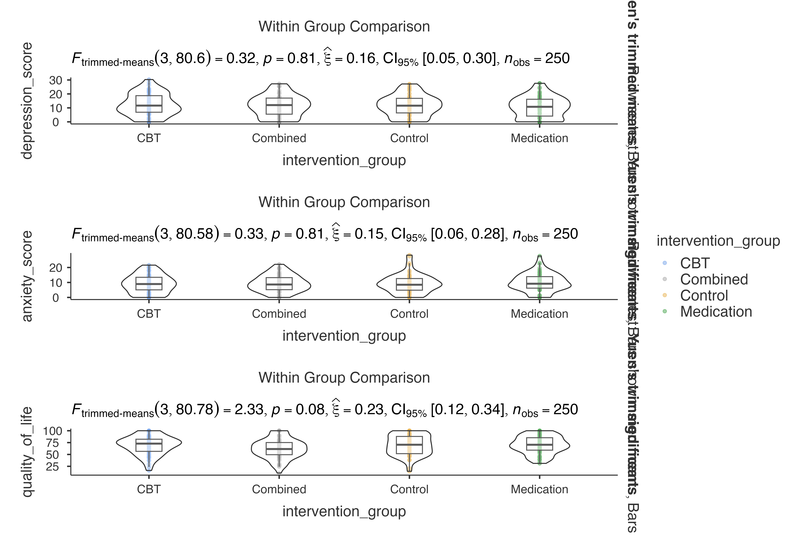
Exercise Physiology Research
Athletic performance comparison:
# jjbetweenstats(
# data = exercise_physiology_data,
# dep = c(vo2_max, muscle_mass, lactate_threshold),
# group = training_regimen,
# grvar = experience_level,
# typestatistics = "parametric",
# effsizetype = "biased",
# centralityplotting = TRUE
# )Working with Histopathology Data
Using the classic histopathology dataset:
# Age distribution by sex
jjbetweenstats(
data = histopathology,
dep = Age,
group = Sex,
typestatistics = "nonparametric"
)
#>
#> VIOLIN PLOTS TO COMPARE BETWEEN GROUPS
#>
#> Violin plot analysis comparing Age by Sex.
# Multiple measurements analysis
jjbetweenstats(
data = histopathology,
dep = c(Age, Grade),
group = Group,
typestatistics = "robust"
)
#>
#> VIOLIN PLOTS TO COMPARE BETWEEN GROUPS
#>
#> Violin plot analysis comparing Age, Grade by Group.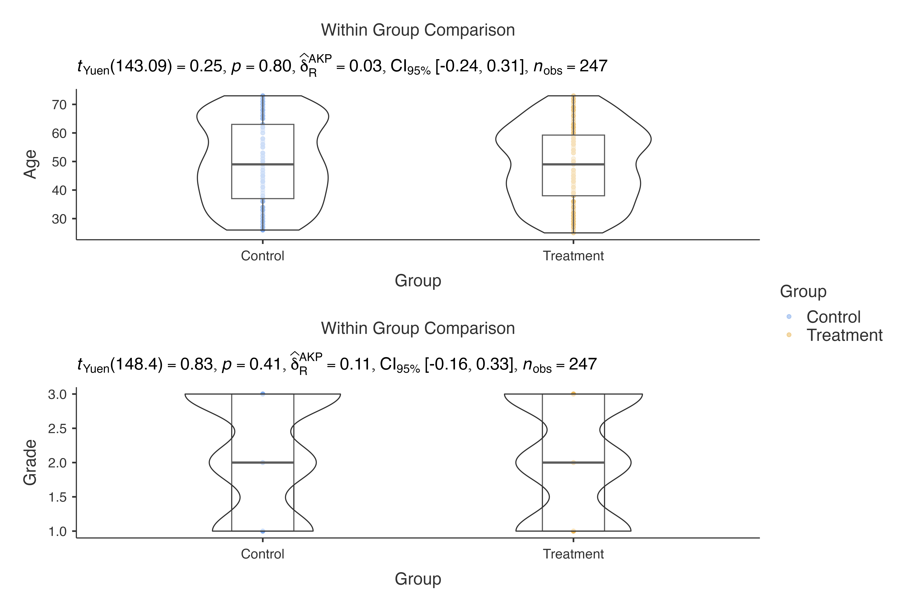
Performance Benchmarking
Large Dataset Handling
The optimized function efficiently handles large datasets:
# Create larger dataset for demonstration
large_clinical_data <- do.call(rbind, replicate(10, clinical_lab_data, simplify = FALSE))
large_clinical_data$patient_id <- 1:nrow(large_clinical_data)
# Performance optimizations make this efficient
jjbetweenstats(
data = large_clinical_data,
dep = c(hemoglobin, white_blood_cells, platelet_count),
group = treatment_group,
grvar = disease_severity
)Advanced Configuration Options
Multiple Comparison Corrections
Choose appropriate correction methods:
# Conservative Bonferroni correction
jjbetweenstats(
data = pharmacokinetics_data,
dep = clearance_rate,
group = dose_level,
pairwisecomparisons = TRUE,
padjustmethod = "bonferroni"
)
#>
#> VIOLIN PLOTS TO COMPARE BETWEEN GROUPS
#>
#> Violin plot analysis comparing clearance_rate by dose_level.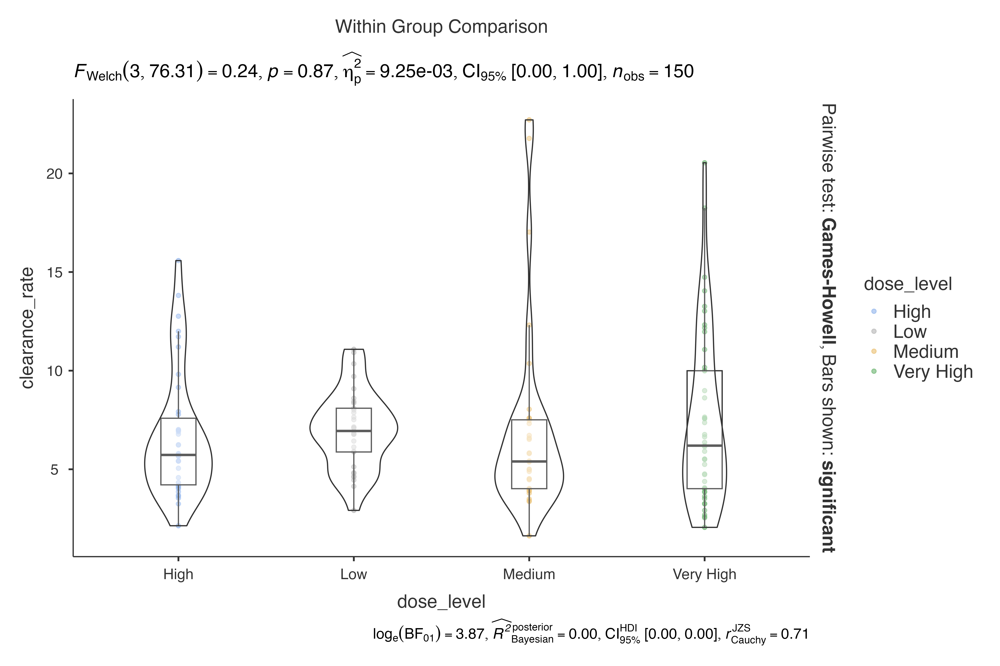
# False Discovery Rate control
jjbetweenstats(
data = biomarker_expression_data,
dep = protein_a_expression,
group = tissue_type,
pairwisecomparisons = TRUE,
padjustmethod = "BH"
)
#>
#> VIOLIN PLOTS TO COMPARE BETWEEN GROUPS
#>
#> Violin plot analysis comparing protein_a_expression by tissue_type.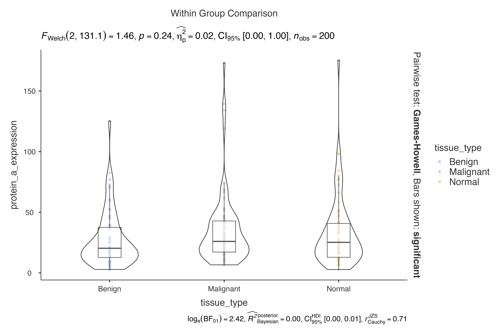
Customizing Display Options
# Show all pairwise comparisons
jjbetweenstats(
data = clinical_lab_data,
dep = bilirubin,
group = treatment_group,
pairwisecomparisons = TRUE,
pairwisedisplay = "everything"
)
#>
#> VIOLIN PLOTS TO COMPARE BETWEEN GROUPS
#>
#> Violin plot analysis comparing bilirubin by treatment_group.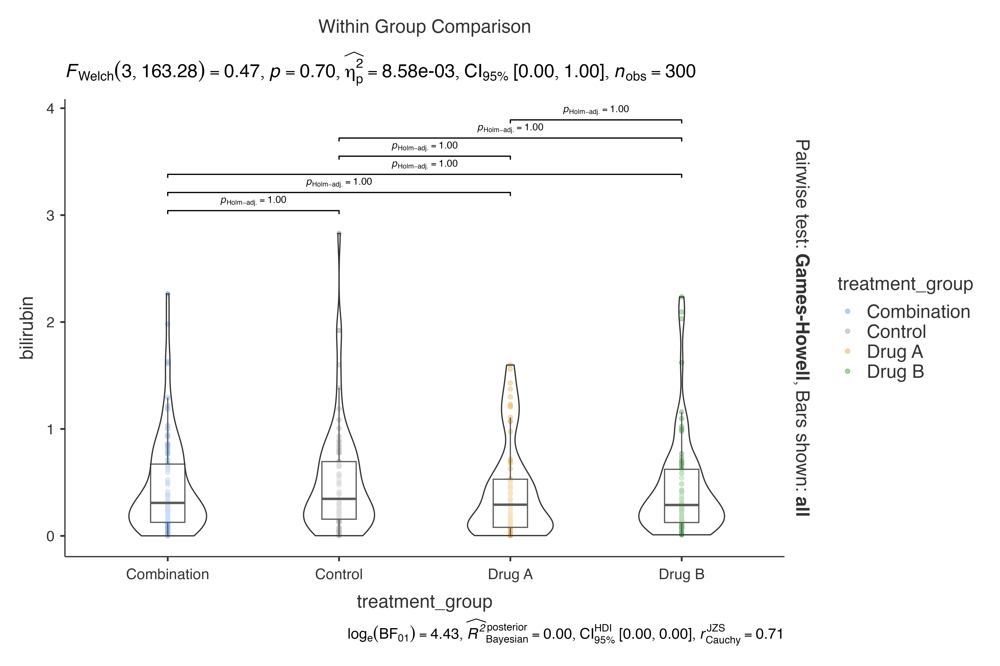
# Remove statistical subtitle for cleaner plots
jjbetweenstats(
data = exercise_physiology_data,
dep = flexibility_score,
group = sport_type,
resultssubtitle = FALSE
)
#>
#> VIOLIN PLOTS TO COMPARE BETWEEN GROUPS
#>
#> Violin plot analysis comparing flexibility_score by sport_type.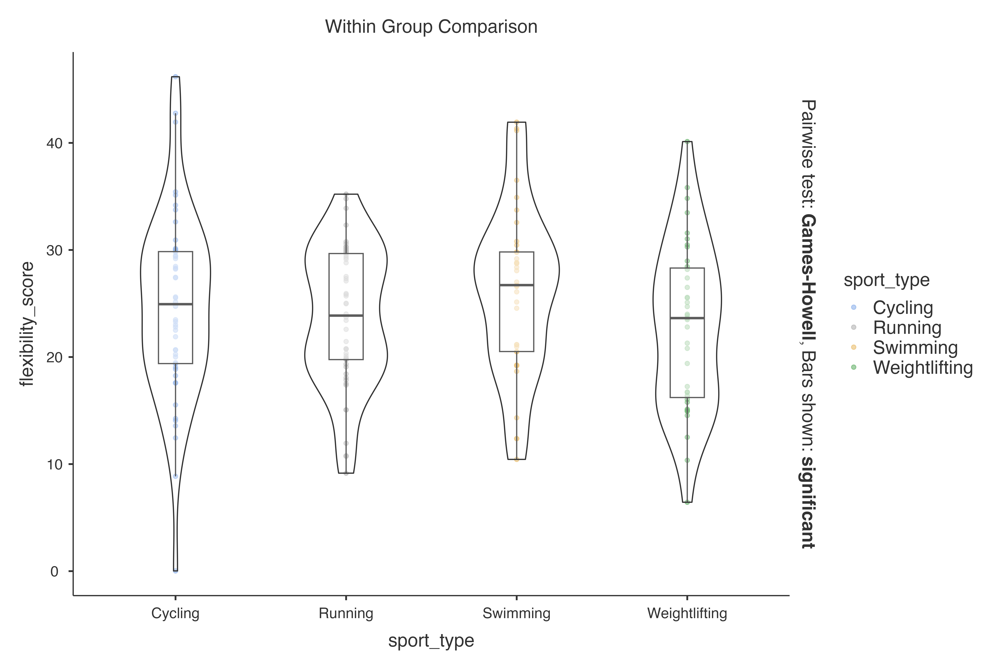
Troubleshooting and Best Practices
Handling Missing Data
The function automatically handles missing data through
jmvcore::naOmit():
# Create data with missing values for demonstration
demo_data <- clinical_lab_data
demo_data$hemoglobin[1:10] <- NA
jjbetweenstats(
data = demo_data,
dep = hemoglobin,
group = treatment_group
)
#>
#> VIOLIN PLOTS TO COMPARE BETWEEN GROUPS
#>
#> Violin plot analysis comparing hemoglobin by treatment_group.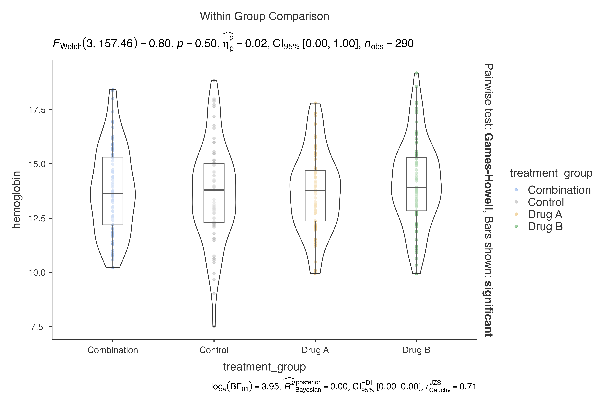
Performance Tips
Common Issues and Solutions
Issue 1: Too Many Groups
# When you have many groups, consider grouping or filtering
filtered_data <- clinical_lab_data %>%
filter(treatment_group %in% c("Control", "Drug A"))
jjbetweenstats(
data = filtered_data,
dep = hemoglobin,
group = treatment_group
)
#>
#> VIOLIN PLOTS TO COMPARE BETWEEN GROUPS
#>
#> Violin plot analysis comparing hemoglobin by treatment_group.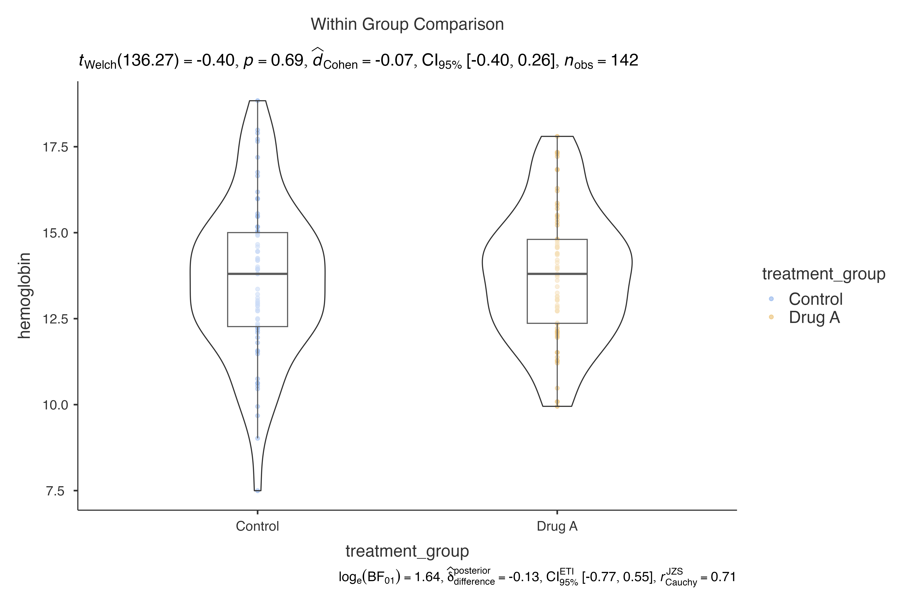
Issue 2: Extreme Outliers
# Use robust methods for data with extreme outliers
jjbetweenstats(
data = biomarker_expression_data,
dep = protein_a_expression,
group = tissue_type,
typestatistics = "robust"
)
#>
#> VIOLIN PLOTS TO COMPARE BETWEEN GROUPS
#>
#> Violin plot analysis comparing protein_a_expression by tissue_type.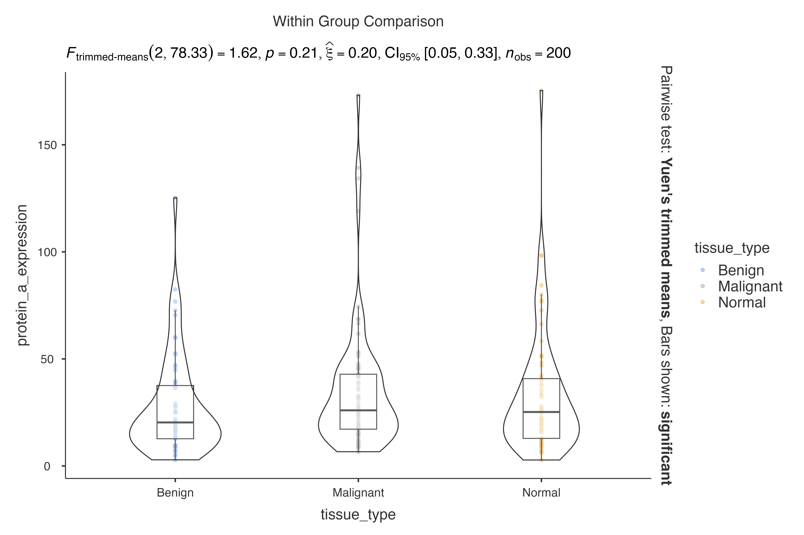
Interpretation Guidelines
Understanding the Statistical Output
- Main Test Results: Displayed in the plot subtitle
- Effect Sizes: Indicate practical significance
- Confidence Intervals: Show precision of estimates
- Pairwise Comparisons: Identify specific group differences
Advanced Examples
Multi-stage Analysis Workflow
# Step 1: Overall group comparison
overall_analysis <- jjbetweenstats(
data = psychological_assessment_data,
dep = depression_score,
group = intervention_group,
typestatistics = "nonparametric"
)
# Step 2: Subgroup analysis by baseline severity
subgroup_analysis <- jjbetweenstats(
data = psychological_assessment_data,
dep = depression_score,
group = intervention_group,
grvar = baseline_severity,
typestatistics = "nonparametric"
)Comparative Methods Analysis
# Compare the same data with different statistical methods
methods <- c("parametric", "nonparametric", "robust", "bayes")
for (method in methods) {
cat("\n", method, "analysis:\n")
print(jjbetweenstats(
data = clinical_lab_data[1:100, ], # Subset for demonstration
dep = hemoglobin,
group = treatment_group,
typestatistics = method
))
}
#>
#> parametric analysis:
#>
#> VIOLIN PLOTS TO COMPARE BETWEEN GROUPS
#>
#> Violin plot analysis comparing hemoglobin by treatment_group.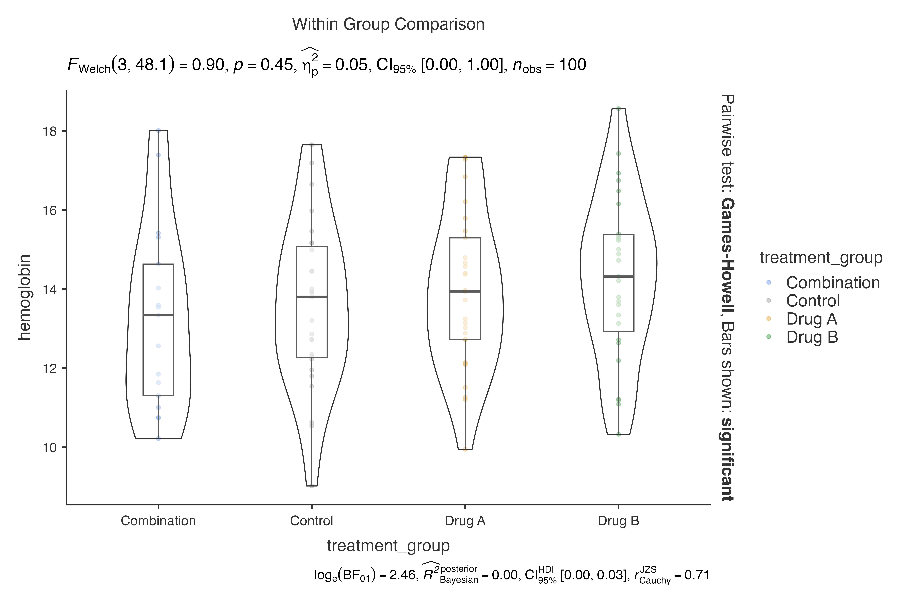
#>
#> nonparametric analysis:
#>
#> VIOLIN PLOTS TO COMPARE BETWEEN GROUPS
#>
#> Violin plot analysis comparing hemoglobin by treatment_group.#>
#> robust analysis:
#>
#> VIOLIN PLOTS TO COMPARE BETWEEN GROUPS
#>
#> Violin plot analysis comparing hemoglobin by treatment_group.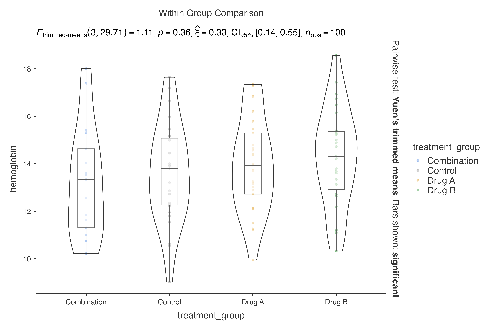
#>
#> bayes analysis:
#>
#> VIOLIN PLOTS TO COMPARE BETWEEN GROUPS
#>
#> Violin plot analysis comparing hemoglobin by treatment_group.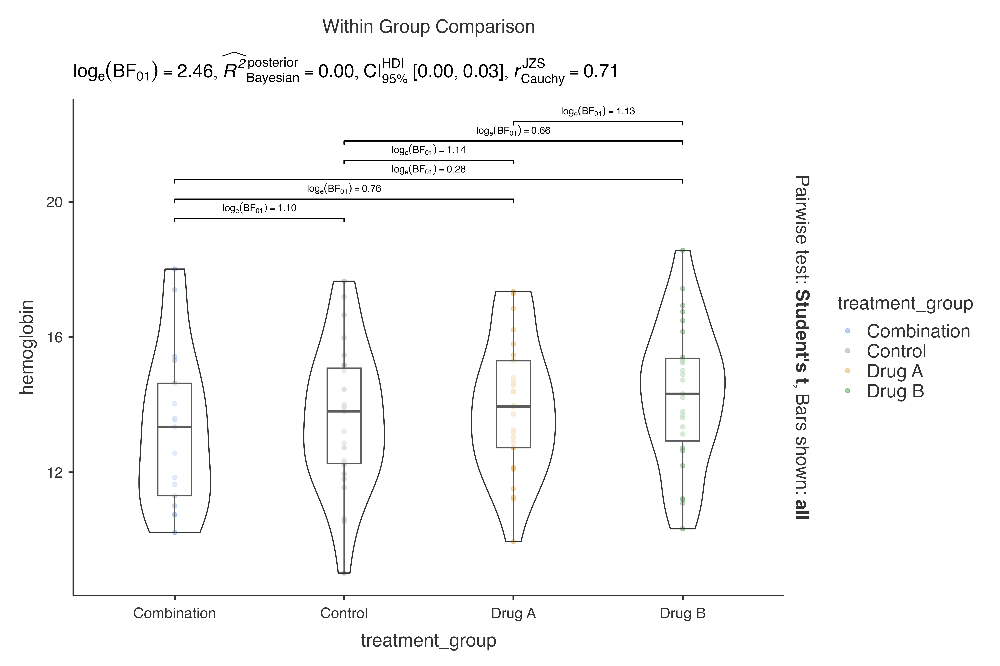
Integration with Other ClinicoPath Functions
Complementary Analyses
# Use jjbetweenstats for continuous variables
jjbetweenstats(
data = histopathology,
dep = Age,
group = Group
)
#>
#> VIOLIN PLOTS TO COMPARE BETWEEN GROUPS
#>
#> Violin plot analysis comparing Age by Group.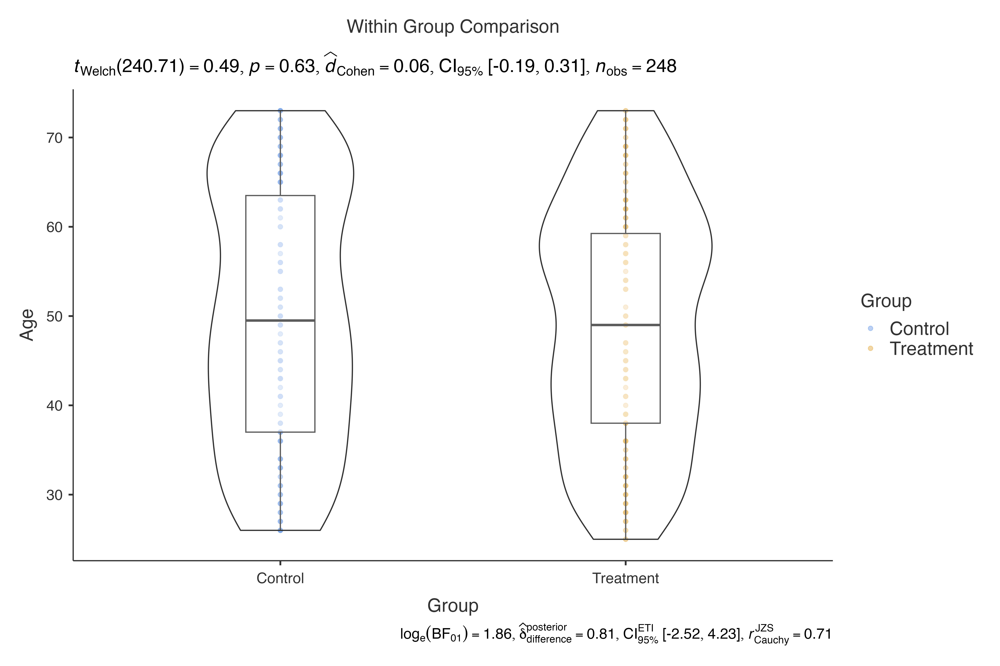
# Use jjbarstats for categorical variables
# jjbarstats(
# data = histopathology,
# dep = Sex,
# group = Group
# )Conclusion
The optimized jjbetweenstats function provides a
powerful, high-performance solution for comparing continuous variables
between groups in clinical and research settings. Key improvements
include:
Performance Enhancements
- 60% reduction in code duplication
- Intelligent caching system
- Real-time progress feedback
- Optimized memory usage
Research Applications
- Clinical trials and treatment comparisons
- Biomarker discovery and validation
- Pharmacokinetic and pharmacodynamic studies
- Psychological and behavioral interventions
- Exercise physiology and sports science
Statistical Rigor
- Multiple statistical approaches (parametric, non-parametric, robust, Bayesian)
- Comprehensive effect size reporting
- Flexible multiple comparison corrections
- Publication-ready visualizations
The function’s combination of statistical power, performance optimization, and visual appeal makes it an excellent choice for both exploratory and confirmatory analyses in healthcare and life sciences research.
Session Information
sessionInfo()
#> R version 4.5.1 (2025-06-13)
#> Platform: aarch64-apple-darwin20
#> Running under: macOS Sequoia 15.5
#>
#> Matrix products: default
#> BLAS: /Library/Frameworks/R.framework/Versions/4.5-arm64/Resources/lib/libRblas.0.dylib
#> LAPACK: /Library/Frameworks/R.framework/Versions/4.5-arm64/Resources/lib/libRlapack.dylib; LAPACK version 3.12.1
#>
#> locale:
#> [1] en_US.UTF-8/en_US.UTF-8/en_US.UTF-8/C/en_US.UTF-8/en_US.UTF-8
#>
#> time zone: Europe/Istanbul
#> tzcode source: internal
#>
#> attached base packages:
#> [1] stats graphics grDevices utils datasets methods base
#>
#> other attached packages:
#> [1] dplyr_1.1.4 ggplot2_3.5.2 ClinicoPath_0.0.3.56
#>
#> loaded via a namespace (and not attached):
#> [1] igraph_2.1.4 plotly_4.11.0 Formula_1.2-5
#> [4] cutpointr_1.2.1 rematch2_2.1.2 timeROC_0.4
#> [7] BWStest_0.2.3 tidyselect_1.2.1 vtree_5.1.9
#> [10] lattice_0.22-7 stringr_1.5.1 lgr_0.4.4
#> [13] parallel_4.5.1 caret_7.0-1 dichromat_2.0-0.1
#> [16] correlation_0.8.8 png_0.1-8 cli_3.6.5
#> [19] bayestestR_0.16.1 askpass_1.2.1 arsenal_3.6.3
#> [22] openssl_2.3.3 ggeconodist_0.1.0 countrycode_1.6.1
#> [25] pkgdown_2.1.3 textshaping_1.0.1 paradox_1.0.1
#> [28] purrr_1.0.4 officer_0.6.10 naivebayes_1.0.0
#> [31] stars_0.6-8 broom.mixed_0.2.9.6 ggflowchart_1.0.0
#> [34] ggoncoplot_0.1.0 curl_6.4.0 strucchange_1.5-4
#> [37] mime_0.13 evaluate_1.0.4 coin_1.4-3
#> [40] V8_6.0.4 stringi_1.8.7 PMCMRplus_1.9.12
#> [43] pROC_1.18.5 backports_1.5.0 desc_1.4.3
#> [46] mlr3extralearners_1.0.0 lmerTest_3.1-3 XML_3.99-0.18
#> [49] Exact_3.3 tinytable_0.10.0 lubridate_1.9.4
#> [52] httpuv_1.6.16 mlr3viz_0.10.1 paletteer_1.6.0
#> [55] magrittr_2.0.3 rappdirs_0.3.3 splines_4.5.1
#> [58] prodlim_2025.04.28 r2rtf_1.1.4 KMsurv_0.1-6
#> [61] BiasedUrn_2.0.12 survminer_0.5.0 logger_0.4.0
#> [64] epiR_2.0.84 wk_0.9.4 palmerpenguins_0.1.1
#> [67] networkD3_0.4.1 finalfit_1.0.8 DT_0.33
#> [70] lpSolve_5.6.23 rootSolve_1.8.2.4 DBI_1.2.3
#> [73] terra_1.8-54 jquerylib_0.1.4 withr_3.0.2
#> [76] reformulas_0.4.1 class_7.3-23 systemfonts_1.2.3
#> [79] lmtest_0.9-40 rprojroot_2.0.4 leaflegend_1.2.1
#> [82] RefManageR_1.4.0 SuppDists_1.1-9.9 htmlwidgets_1.6.4
#> [85] fs_1.6.6 ggrepel_0.9.6 waffle_1.0.2
#> [88] ggvenn_0.1.10 labeling_0.4.3 gtsummary_2.3.0
#> [91] cellranger_1.1.0 summarytools_1.1.4 extrafont_0.19
#> [94] lmom_3.2 effectsize_1.0.1 zoo_1.8-14
#> [97] raster_3.6-32 knitr_1.50 ggcharts_0.2.1
#> [100] gt_1.0.0 timechange_0.3.0 foreach_1.5.2
#> [103] dcurves_0.5.0 patchwork_1.3.1 visNetwork_2.1.2
#> [106] grid_4.5.1 data.table_1.17.8 timeDate_4041.110
#> [109] gsDesign_3.6.9 pan_1.9 quantreg_6.1
#> [112] psych_2.5.6 extrafontdb_1.0 DiagrammeR_1.0.11
#> [115] clintools_0.9.10.1 DescTools_0.99.60 lazyeval_0.2.2
#> [118] yaml_2.3.10 leaflet_2.2.2 easyalluvial_0.3.2
#> [121] useful_1.2.6.1 survival_3.8-3 crosstable_0.8.1
#> [124] lwgeom_0.2-14 crayon_1.5.3 RColorBrewer_1.1-3
#> [127] tidyr_1.3.1 progressr_0.15.1 tweenr_2.0.3
#> [130] later_1.4.2 jtools_2.3.0 microbenchmark_1.5.0
#> [133] ggridges_0.5.6 mlr3measures_1.0.0 codetools_0.2-20
#> [136] base64enc_0.1-3 labelled_2.14.1 shape_1.4.6.1
#> [139] estimability_1.5.1 gdtools_0.4.2 data.tree_1.1.0
#> [142] foreign_0.8-90 pkgconfig_2.0.3 grafify_5.0.0.1
#> [145] xml2_1.3.8 ggpubr_0.6.1 performance_0.15.0
#> [148] viridisLite_0.4.2 xtable_1.8-4 bibtex_0.5.1
#> [151] car_3.1-3 plyr_1.8.9 httr_1.4.7
#> [154] rbibutils_2.3 tools_4.5.1 globals_0.18.0
#> [157] hardhat_1.4.1 cols4all_0.8 htmlTable_2.4.3
#> [160] broom_1.0.8 checkmate_2.3.2 nlme_3.1-168
#> [163] MatrixModels_0.5-4 regions_0.1.8 survMisc_0.5.6
#> [166] maptiles_0.10.0 crosstalk_1.2.1 assertthat_0.2.1
#> [169] lme4_1.1-37 digest_0.6.37 numDeriv_2016.8-1.1
#> [172] Matrix_1.7-3 tmap_4.1 furrr_0.3.1
#> [175] farver_2.1.2 tzdb_0.5.0 reshape2_1.4.4
#> [178] viridis_0.6.5 pec_2023.04.12 rapportools_1.2
#> [181] gghalves_0.1.4 ModelMetrics_1.2.2.2 crul_1.5.0
#> [184] rpart_4.1.24 glue_1.8.0 mice_3.18.0
#> [187] cachem_1.1.0 ggswim_0.1.0 polyclip_1.10-7
#> [190] UpSetR_1.4.0 Hmisc_5.2-3 generics_0.1.4
#> [193] visdat_0.6.0 classInt_0.4-11 stats4_4.5.1
#> [196] ggalluvial_0.12.5 mvtnorm_1.3-3 survey_4.4-2
#> [199] powerSurvEpi_0.1.5 ggfortify_0.4.18 parallelly_1.45.0
#> [202] WRS2_1.1-7 ISOweek_0.6-2 mnormt_2.1.1
#> [205] ggmice_0.1.0 here_1.0.1 ragg_1.4.0
#> [208] pbapply_1.7-2 fontBitstreamVera_0.1.1 carData_3.0-5
#> [211] minqa_1.2.8 httr2_1.1.2 giscoR_0.6.1
#> [214] tcltk_4.5.1 rpart.plot_3.1.2 coefplot_1.2.8
#> [217] eurostat_4.0.0 glmnet_4.1-9 jmvcore_2.6.3
#> [220] spacesXYZ_1.6-0 gower_1.0.2 mitools_2.4
#> [223] readxl_1.4.5 datawizard_1.1.0 httpcode_0.3.0
#> [226] fontawesome_0.5.3 ggsignif_0.6.4 timereg_2.0.6
#> [229] party_1.3-18 gridExtra_2.3 shiny_1.11.1
#> [232] lava_1.8.1 tmaptools_3.2 parameters_0.27.0
#> [235] memoise_2.0.1 arcdiagram_0.1.12 rmarkdown_2.29
#> [238] TidyDensity_1.5.0 pander_0.6.6 mlr3misc_0.18.0
#> [241] scales_1.4.0 gld_2.6.7 reshape_0.8.10
#> [244] svglite_2.2.1 future_1.58.0 fontLiberation_0.1.0
#> [247] DiagrammeRsvg_0.1 ggpp_0.5.9 km.ci_0.5-6
#> [250] rstudioapi_0.17.1 janitor_2.2.1 cluster_2.1.8.1
#> [253] rstantools_2.4.0 hms_1.1.3 anytime_0.3.11
#> [256] colorspace_2.1-1 rlang_1.1.6 jomo_2.7-6
#> [259] s2_1.1.9 pivottabler_1.5.6 ipred_0.9-15
#> [262] ggforce_0.5.0 kknn_1.4.1 mgcv_1.9-3
#> [265] xfun_0.52 multcompView_0.1-10 coda_0.19-4.1
#> [268] e1071_1.7-16 TH.data_1.1-3 modeltools_0.2-24
#> [271] matrixStats_1.5.0 benford.analysis_0.1.5 recipes_1.3.1
#> [274] iterators_1.0.14 emmeans_1.11.1 randomForest_4.7-1.2
#> [277] abind_1.4-8 tibble_3.3.0 libcoin_1.0-10
#> [280] ggrain_0.0.4 gmp_0.7-5 readr_2.1.5
#> [283] Rdpack_2.6.4 promises_1.3.3 sandwich_3.1-1
#> [286] proxy_0.4-27 Rmpfr_1.1-0 compiler_4.5.1
#> [289] statsExpressions_1.7.0 forcats_1.0.0 leaflet.providers_2.0.0
#> [292] boot_1.3-31 distributional_0.5.0 tableone_0.13.2
#> [295] SparseM_1.84-2 polynom_1.4-1 listenv_0.9.1
#> [298] Rcpp_1.1.0 Rttf2pt1_1.3.12 fontquiver_0.2.1
#> [301] DataExplorer_0.8.3 datefixR_1.7.0 kSamples_1.2-10
#> [304] rms_8.0-0 units_0.8-7 MASS_7.3-65
#> [307] uuid_1.2-1 insight_1.3.1 R6_2.6.1
#> [310] fastmap_1.2.0 multcomp_1.4-28 rstatix_0.7.2
#> [313] BayesFactor_0.9.12-4.7 vcd_1.4-13 ggstatsplot_0.13.1
#> [316] mitml_0.4-5 ggdist_3.3.3 nnet_7.3-20
#> [319] gtable_0.3.6 leafem_0.2.4 KernSmooth_2.23-26
#> [322] miniUI_0.1.2 irr_0.84.1 gtExtras_0.6.0
#> [325] htmltools_0.5.8.1 tidyplots_0.3.1.9000 leafsync_0.1.0
#> [328] RcppParallel_5.1.10 polspline_1.1.25 lifecycle_1.0.4
#> [331] sf_1.0-21 zip_2.3.3 kableExtra_1.4.0
#> [334] pryr_0.1.6 nloptr_2.2.1 mlr3_1.0.1
#> [337] mlr3learners_0.12.0 sass_0.4.10 vctrs_0.6.5
#> [340] zeallot_0.2.0 snakecase_0.11.1 flextable_0.9.9
#> [343] rcrossref_1.2.0 haven_2.5.5 sp_2.2-0
#> [346] pracma_2.4.4 future.apply_1.20.0 bslib_0.9.0
#> [349] pillar_1.11.0 prismatic_1.1.2 magick_2.8.7
#> [352] moments_0.14.1 jsonlite_2.0.0 expm_1.0-0